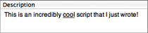

|
Description |
|
A script can have a description. This can serve as a reminder to the developer, an explanation to users, and as a splash screen in an applet.
To access a script’s description:
-
Choose View > Resources Tab.
-
Or, click Resources in the window’s toolbar.
The description appears in the top pane at the right side of the script window. It consists of styled text. Text styling will be maintained in an applet’s splash screen.
